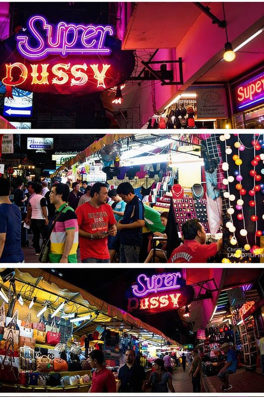
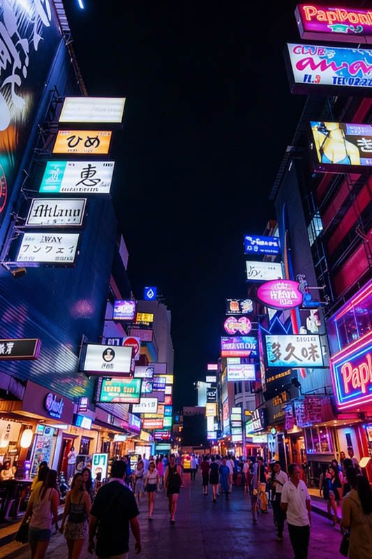

Patpong is Bangkok's most famous entertainment district, a historic area that has been a significant part of the city's nightlife scene since the 1960s. Located in the heart of the Silom business district, this compact entertainment zone features two parallel streets (Patpong 1 and Patpong 2) that combine shopping, dining, and entertainment in a vibrant, internationally recognized tourist destination.
What makes Patpong unique is its dual identity as both a bustling night market and an entertainment district. During evening hours, the streets transform into a lively marketplace with vendors selling everything from clothing to souvenirs, while simultaneously hosting international bars, restaurants, and entertainment venues that cater to tourists and business travelers from around the world.
For Royal Ivory Hotel guests, Patpong offers convenient access via BTS (just 15 minutes away) to experience one of Bangkok's most culturally significant nightlife areas. The district provides a safe, tourist-friendly environment with good infrastructure, police presence, and a fascinating glimpse into Bangkok's entertainment culture and history.
Patpong's location in the central Silom business district makes it easily accessible from Royal Ivory Hotel using the BTS Skytrain system. The area benefits from excellent public transportation connections and is one of the most accessible nightlife districts in Bangkok.
Total Cost: 44 Baht one-way | Journey Time: 15-20 minutes | Frequency: Every 3-6 minutes
🚇 Travel Tip from Royal Ivory: The BTS route is the most reliable and fastest way to reach Patpong, especially during evening rush hours. The area is most active from 7:00 PM onwards, making it perfect for after-dinner entertainment and night market shopping.

The Patpong Night Market is one of Bangkok's most famous street markets, operating nightly along Patpong Road and offering an incredible variety of goods in a vibrant, well-organized setting. This market has become a tourist institution, combining shopping convenience with the excitement of Bangkok's famous nightlife district.
The market creates a carnival-like atmosphere with hundreds of stalls lining the street, bright neon lighting, background music from nearby bars, and a continuous flow of international tourists. Vendors are experienced with international customers and many speak multiple languages, making shopping communication easy and enjoyable.
Peak hours: 8:00-11:00 PM for full selection and energy
Bargaining: Start at 50% of asking price, settle around 60-70%
Quality check: Inspect items carefully, especially electronics and clothing
Payment: Cash preferred, bring small bills for easier transactions
Patpong's entertainment scene reflects its historical significance as one of Bangkok's original nightlife destinations, featuring a mix of international bars, restaurants, and entertainment venues that cater to tourists and business travelers seeking diverse nighttime experiences.
Patpong represents an important chapter in Bangkok's development as an international tourist destination. The area's evolution from a business district to an entertainment zone reflects Thailand's adaptation to international tourism and Bangkok's position as a major Southeast Asian travel hub.
Patpong offers excellent dining options ranging from street food vendors to upscale international restaurants, making it easy to enjoy a complete evening of shopping, dining, and entertainment in one convenient location.
| Dining Type | Cuisine Options | Price Range | Best For |
|---|---|---|---|
| 🍜 Street Food | Thai classics, grilled meats, noodles | 50-150 Baht per dish | Quick bites, authentic flavors |
| 🍝 Casual Restaurants | Thai, International, Asian fusion | 200-500 Baht per meal | Comfortable dining, good variety |
| 🥂 Upscale Dining | Fine dining, Western, Japanese | 800-2,000 Baht per meal | Special occasions, business dinners |
| 🍺 Bar Food | Pub food, snacks, finger foods | 150-400 Baht per dish | Drinks accompaniment, social dining |
Many visitors enjoy progressive dining in Patpong: starting with dinner at a restaurant, browsing the night market, then visiting bars for drinks and socializing. The compact area makes it easy to move between venues and experience different aspects of the district in one evening.
Patpong is a well-established tourist area with good safety infrastructure, police presence, and experience catering to international visitors. Understanding the area's culture and maintaining standard safety precautions ensures a positive experience.
📋 Smart Visiting Tips:
Respect local culture: Be polite and respectful to vendors and staff
Bargain fairly: Negotiate prices respectfully, understanding vendors need to earn a living
Stay aware: Keep valuables secure and be conscious of surroundings
Drink responsibly: Know your limits and stay hydrated
Use registered transportation: BTS, official taxis, or hotel-arranged transport
Patpong's central Silom location provides easy access to other significant Bangkok attractions, upscale shopping areas, cultural sites, and business districts, making it an ideal base for exploring central Bangkok.
Combine Patpong with nearby attractions for a complete Bangkok experience: Lumpini Park for sunset views, dinner in Silom, shopping at Patpong night market, and drinks at a Sathorn sky bar. The excellent BTS connectivity makes this combination easy and efficient.
Patpong is famous as Bangkok's historic entertainment district featuring a night market, international bars, restaurants, and adult entertainment venues. It's a significant cultural landmark and tourist area that has been part of Bangkok's nightlife scene since the 1960s.
Yes, Patpong is generally safe for tourists. It's a well-established tourist area with police presence, good lighting, and heavy foot traffic. The area caters to international visitors and maintains safety standards. Standard nightlife precautions apply.
Take BTS Sukhumvit Line from Nana to Siam, transfer to Silom Line, exit at Sala Daeng station (15-20 minutes total, 44 Baht). Patpong is 2-minute walk from BTS station. Alternatively, direct taxi (15-25 minutes, 90-130 THB).
Patpong night market opens around 6:00 PM and operates until midnight daily. Peak hours are 8:00-11:00 PM when the market is most active with vendors, shoppers, and the full nightlife atmosphere.
Budget 1,000-2,500 Baht for full evening: drinks 200-500 Baht, dinner 300-800 Baht, night market shopping 500-1,500 Baht, transportation 100-400 Baht roundtrip. Prices vary significantly based on venue choice and shopping preferences.
🕰️ Perfect Evening Timeline:
6:30 PM: Arrive via BTS, explore area layout and restaurant options
7:00-8:30 PM: Dinner at chosen restaurant, international or Thai cuisine
8:30-10:30 PM: Night market shopping during peak activity hours
10:30 PM-12:30 AM: Bar hopping, drinks, and socializing
12:30 AM: Return via BTS (until midnight) or taxi
Patpong pairs excellently with other central Bangkok attractions: afternoon shopping in Siam or Silom, early dinner in the business district, Patpong night market and entertainment, and late-night sky bar views. The central location makes this combination very convenient.